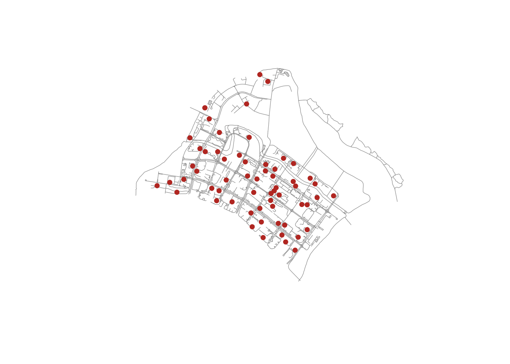
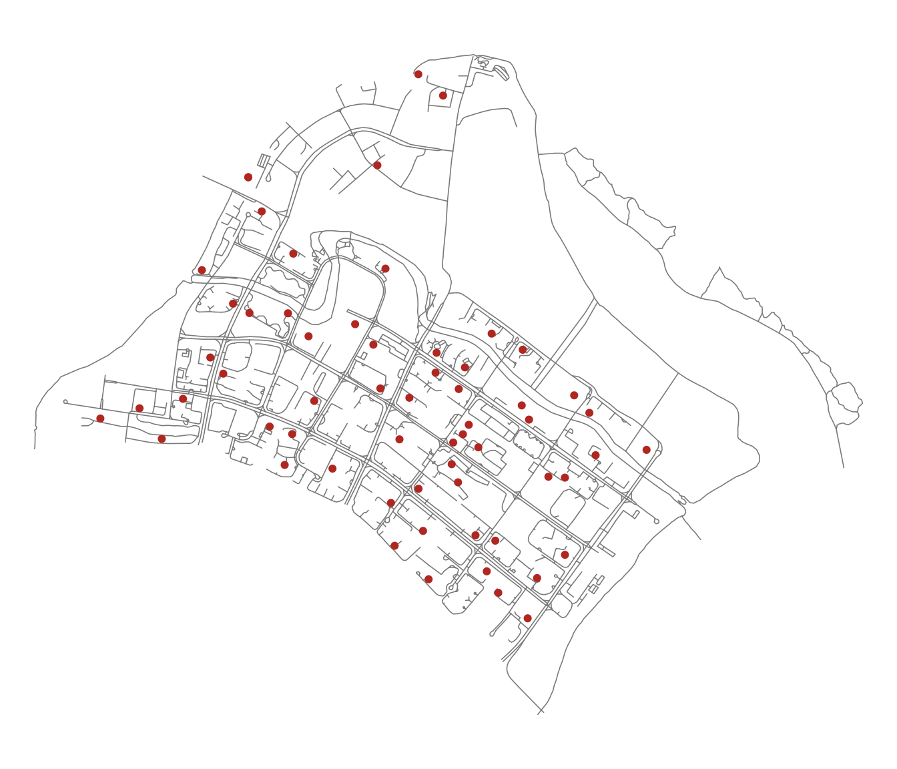
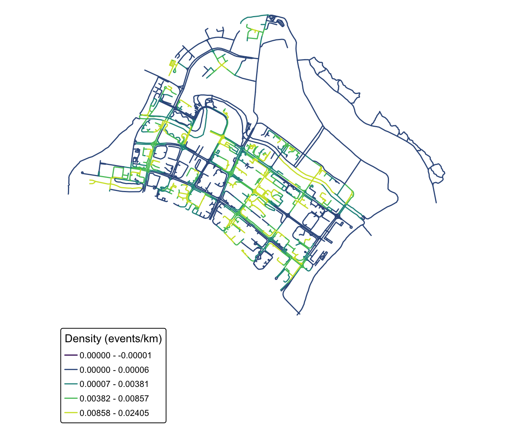
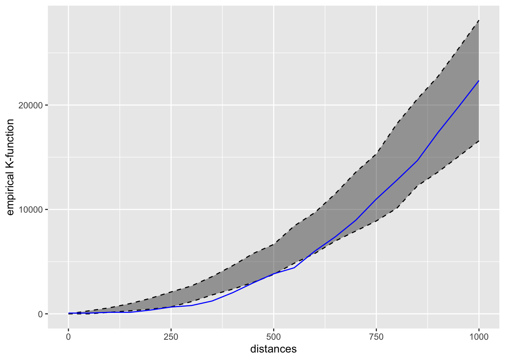
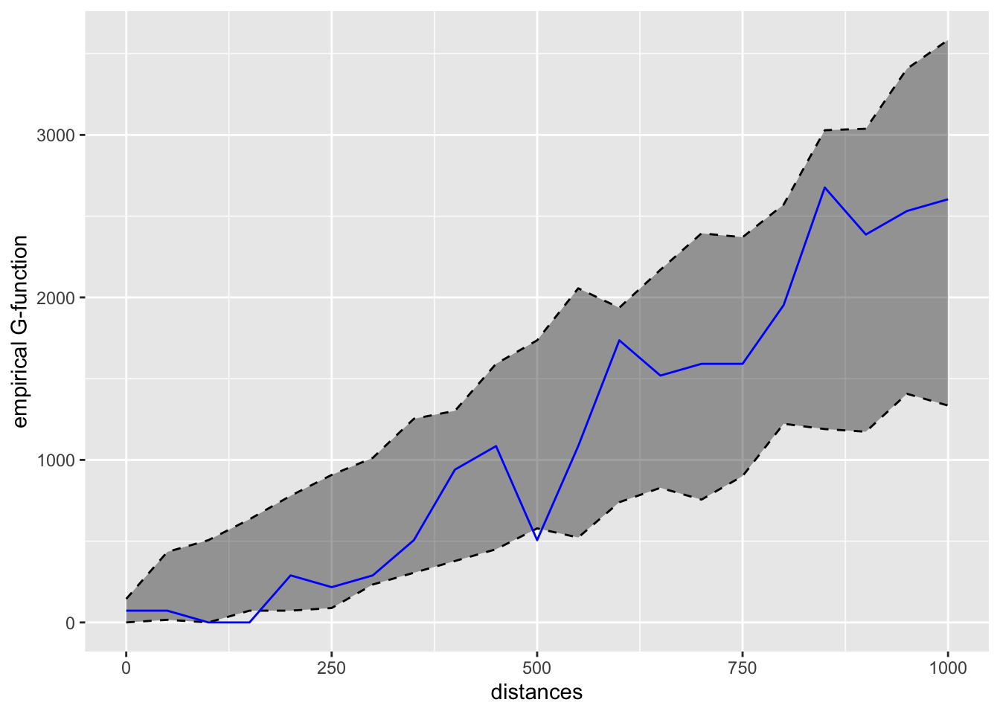

pacman::p_load(sf, spNetwork, tmap, tidyverse)Network Constrained Spatial Point Patterns Analysis
HANDS-ON EXERCISE 3
R spNetwork NKDE Network K-function
This exercise follows Network Constrained Spatial Point Patterns Analysis, the reading listed under Lesson 3, Advanced Spatial Point Patterns Analysis.
1. Overview
Everything in Hands-on Exercise 2 assumed events could fall anywhere on a two-dimensional plane, and measured distance as the straight line between them. For childcare centres that assumption is wrong in a specific way: a centre sits on a street, a parent walks along streets, and two centres on opposite banks of Punggol Waterway are 80 metres apart in Euclidean terms and roughly a kilometre apart in walking terms.
Network constrained SPPA fixes that by confining both the events and the distance metric to the network itself. This exercise uses spNetwork to:
- derive a network kernel density estimate (NKDE), and
- perform network-constrained G- and K-function analysis.
The study area is Punggol.
2. The Data
| Dataset | Description | Format |
|---|---|---|
Punggol_St |
Punggol road network | ESRI Shapefile (line) |
Punggol_CC |
Childcare centres in Punggol | ESRI Shapefile (point) |
Both were supplied with the course under Lesson 3 and are already in SVY21 (EPSG:3414), so no reprojection is needed — a first for these exercises.
3. Getting Started
4. Data Import and Preparation
network <- st_read(dsn = "data/geospatial",
layer = "Punggol_St",
quiet = TRUE)
childcare <- st_read(dsn = "data/geospatial",
layer = "Punggol_CC",
quiet = TRUE) %>%
st_zm(drop = TRUE, what = "ZM")networkSimple feature collection with 2642 features and 2 fields
Geometry type: LINESTRING
Dimension: XY
Bounding box: xmin: 34038.56 ymin: 40941.11 xmax: 38882.85 ymax: 44801.27
Projected CRS: SVY21 / Singapore TM
First 10 features:
LINK_ID ST_NAME geometry
1 116130894 PUNGGOL RD LINESTRING (36546.89 44574....
2 116130897 PONGGOL TWENTY-FOURTH AVE LINESTRING (36546.89 44574....
3 116130901 PONGGOL SEVENTEENTH AVE LINESTRING (36012.73 44154....
4 116130902 PONGGOL SEVENTEENTH AVE LINESTRING (36062.81 44197....
5 116130907 PUNGGOL CENTRAL LINESTRING (36131.85 42755....
6 116130908 PUNGGOL RD LINESTRING (36112.93 42752....
7 116130909 PUNGGOL CENTRAL LINESTRING (36127.4 42744.5...
8 116130910 PUNGGOL FLD LINESTRING (35994.98 42428....
9 116130911 PUNGGOL FLD LINESTRING (35984.97 42407....
10 116130912 EDGEFIELD PLNS LINESTRING (36200.87 42219....childcareSimple feature collection with 61 features and 1 field
Geometry type: POINT
Dimension: XY
Bounding box: xmin: 34423.98 ymin: 41503.6 xmax: 37619.47 ymax: 44685.77
Projected CRS: SVY21 / Singapore TM
First 10 features:
Name geometry
1 kml_10 POINT (36173.81 42550.33)
2 kml_99 POINT (36479.56 42405.21)
3 kml_100 POINT (36618.72 41989.13)
4 kml_101 POINT (36285.37 42261.42)
5 kml_122 POINT (35414.54 42625.1)
6 kml_161 POINT (36545.16 42580.09)
7 kml_172 POINT (35289.44 44083.57)
8 kml_188 POINT (36520.56 42844.74)
9 kml_205 POINT (36924.01 41503.6)
10 kml_222 POINT (37141.76 42326.36)The st_zm() call on the childcare layer drops the Z (and M) dimension. The shapefile stores points as XYZ with a zero elevation, and spNetwork will refuse to snap 3D points onto a 2D network, so this is not cosmetic — leaving it out is an error later.
st_crs(network)$epsg[1] 3414st_geometry_type(network) %>% unique()[1] LINESTRING
18 Levels: GEOMETRY POINT LINESTRING POLYGON MULTIPOINT ... TRIANGLEnrow(network)[1] 2642nrow(childcare)[1] 612,642 road segments and 61 childcare centres.
5. Visualising the Geospatial Data
plot(st_geometry(network), col = "grey60", lwd = 0.6)
plot(childcare, add = TRUE, col = "#c0392b", pch = 19, cex = 0.8)
The reference chapter renders this interactively. I have kept the static version: with 2,645 network segments the self-contained interactive page ran to several megabytes, which is too heavy to publish for the amount it adds here.
tm_shape(network) +
tm_lines(col = "grey55", lwd = 0.8) +
tm_shape(childcare) +
tm_dots(fill = "#c0392b", size = 0.35) +
tm_layout(frame = FALSE)
6. Network KDE Analysis
6.1 Preparing the Lixels
A kernel density estimate on a network is evaluated along the network, not over a grid. The first step is to cut the network into lixels — line pixels — of roughly equal length.
lixels <- lixelize_lines(network,
700,
mindist = 375)
nrow(lixels)[1] 2645The 700m target length with a 375m minimum means any leftover segment shorter than 375m is merged into the previous lixel rather than left as a stub. The count barely changes from the original 2,642 segments, which tells me most Punggol road segments were already shorter than 700m — this is a dense residential network, not a highway corridor.
6.2 Generating Line Centre Points
samples <- lines_center(lixels)
nrow(samples)[1] 2645These centre points are where the density will actually be evaluated. Note they are the centre of each lixel by line length, not the geometric centroid, so they always fall on the line even where it bends.
6.3 Performing NKDE
densities <- nkde(network,
events = childcare,
w = rep(1, nrow(childcare)),
samples = samples,
kernel_name = "quartic",
bw = 300,
div = "bw",
method = "simple",
digits = 1,
tol = 1,
grid_shape = c(1, 1),
max_depth = 8,
agg = 5,
sparse = TRUE,
verbose = FALSE)A note on the arguments that actually change the answer:
kernel_name = "quartic"— the kernel shape.spNetworkalso offers triangle, gaussian, tricube, cosine, epanechnikov and uniform.bw = 300— the bandwidth, in metres along the network. This is the single most consequential choice here.method = "simple"— the simplest of the three NKDE variants. It treats network distance as a straight replacement for Euclidean distance in the kernel. It is fast and intuitive, but it is not a true density: the values do not integrate to the number of events, because mass is duplicated at every intersection."discontinuous"and"continuous"correct that at increasing computational cost.
Attaching the computed densities and rescaling from events-per-metre to events-per-kilometre so the legend is readable:
samples$density <- densities
lixels$density <- densities
samples$density <- samples$density * 1000
lixels$density <- lixels$density * 1000summary(lixels$density) Min. 1st Qu. Median Mean 3rd Qu. Max.
0.000000 0.000000 0.001424 0.003787 0.007430 0.024046 6.4 Visualising the NKDE
tm_shape(lixels) +
tm_lines(col = "density",
col.scale = tm_scale_intervals(style = "quantile", values = "viridis"),
col.legend = tm_legend(title = "Density (events/km)"),
lwd = 1.5) +
tm_layout(frame = FALSE)
NoteWhat the NKDE map shows that a planar KDE would not
The high-density road segments are not a blob in the middle of Punggol. They are specific stretches — the roads threading the HDB precincts either side of Punggol Field and Punggol Central — while the roads along the waterway and the LRT viaduct run cold despite being geometrically close to plenty of centres. A planar KDE would smear density straight across the waterway and report a hotspot in the middle of the water, which is exactly the artefact this method exists to avoid.
7. Network Constrained G- and K-Function Analysis
The same complete spatial randomness question as Hands-on Exercise 2 Part 02, but with randomness defined on the network: the simulated points are scattered along the road network rather than across the plane.
\(H_0\): the observed spatial point events are uniformly distributed over the street network in Punggol. \(H_1\): the observed spatial point events are not uniformly distributed over the street network.
The test is at the 95% confidence interval, with the null rejected if the observed curve leaves the simulated envelope.
set.seed(1234)
kfun_childcare <- kfunctions(network,
childcare,
start = 0,
end = 1000,
step = 50,
width = 50,
nsim = 50,
resolution = 50,
verbose = FALSE,
conf_int = 0.05)7.1 The K-Function Result
kfun_childcare$plotk
7.2 The G-Function Result
kfun_childcare$plotg
Reading the direction off the plots by eye is unreliable, so I compute where the observed curve actually leaves the simulated envelope:
v <- kfun_childcare$values
rng <- function(d) {
if (length(d) == 0) {
"never leaves envelope"
} else {
paste0(min(d), "-", max(d), " m")
}
}
data.frame(
Function = c("Network K", "Network K", "Network G", "Network G"),
Side = c("above upper (clustered)", "below lower (regular)",
"above upper (clustered)", "below lower (regular)"),
Range = c(rng(v$distances[v$obs_k > v$upper_k & v$distances > 0]),
rng(v$distances[v$obs_k < v$lower_k]),
rng(v$distances[v$obs_g > v$upper_g & v$distances > 0]),
rng(v$distances[v$obs_g < v$lower_g]))
) Function Side Range
1 Network K above upper (clustered) never leaves envelope
2 Network K below lower (regular) 150-550 m
3 Network G above upper (clustered) never leaves envelope
4 Network G below lower (regular) 150-500 m
ImportantConclusion of the test — and it is not what I expected
The observed curves leave the envelope on the lower side, not the upper one. Fewer centres fall within a few hundred network metres of each other than complete spatial randomness along the network would produce.
I reject the null hypothesis — the centres are not uniformly distributed along the network — but in the opposite direction to clustering. This is regularity (dispersion, inhibition). At longer distances the observed curve returns inside the envelope, so beyond that range the pattern is indistinguishable from random.
The seed is fixed above so these ranges are reproducible; without it the exact crossing distances shift on every rebuild.
8. What I Take From This Exercise
The result contradicts Exercise 2, and the contradiction is the whole lesson. Exercise 2 Part 02 concluded that childcare centres cluster at short range. Measured along the road network, the same kind of test on Punggol says the opposite: over the mid-range distances in the table above, centres are further apart than chance.
I do not think either result is wrong. They are answering different questions:
- The planar K-function asks “are centres closer together than random points scattered over this polygon?” A large share of that polygon is water, park and reserve where nothing can be built, so the random comparison points are spread over space that real centres can never occupy. Against that null, anything confined to buildable land looks clustered.
- The network K-function asks “are centres closer together than random points scattered over this road network?” That null already excludes the unbuildable space. What is left is the actual siting decision — and the actual siting decision turns out to space centres out, roughly one per residential precinct, which is exactly what a planner allocating childcare places by catchment would do.
So the planar “clustering” in Exercise 2 was substantially an artefact of the null, not a finding about childcare policy. That is an uncomfortable thing to discover about work I had already written up, and it is the strongest argument I have seen for why the network-constrained method exists.
Where the method is fragile. Three things would change the answer and none of them are statistical:
- Bandwidth. 300m is a defensible walking distance, but it is a choice, and the hotspots move if I halve or double it. There is no
bw.diggleequivalent here that picks it for me. - Network completeness.
Punggol_Stis a road network. Parents in Punggol walk through void decks, park connectors and the waterway bridges, none of which are in this layer. The network I am measuring distance on is not the network people use. method = "simple". It duplicates kernel mass at intersections, and Punggol is full of intersections. The continuous method exists precisely to fix this and I would want to re-run with it before quoting any of these density values as real.
On nsim = 50. The chapter uses 50 simulations and I have kept that, but 50 is thin for a 95% envelope — it puts the pointwise significance level at 2/51, close enough to 0.04 that a marginal result would not survive scrutiny. Here the observed curve sits clearly outside the envelope across a contiguous band of distances rather than grazing it at a single point, so the conclusion holds. A single-band excursion would have been a reason to raise nsim rather than report it.
Connecting back. Reading Exercise 2 and this one together is the actual lesson. First-order KDE says where events are dense. Second-order G/F/K/L say whether events interact. Network-constrained versions say whether either conclusion survives once you stop pretending people travel in straight lines and stop pretending reservoirs are candidate sites. Each layer removed an assumption the previous one was quietly making — and unlike the first two steps, this one did not confirm the earlier answer. It reversed it. The thing I will carry forward is that in spatial statistics the null hypothesis is a modelling choice as consequential as the estimator, and a result is only as meaningful as the randomness it was compared against.